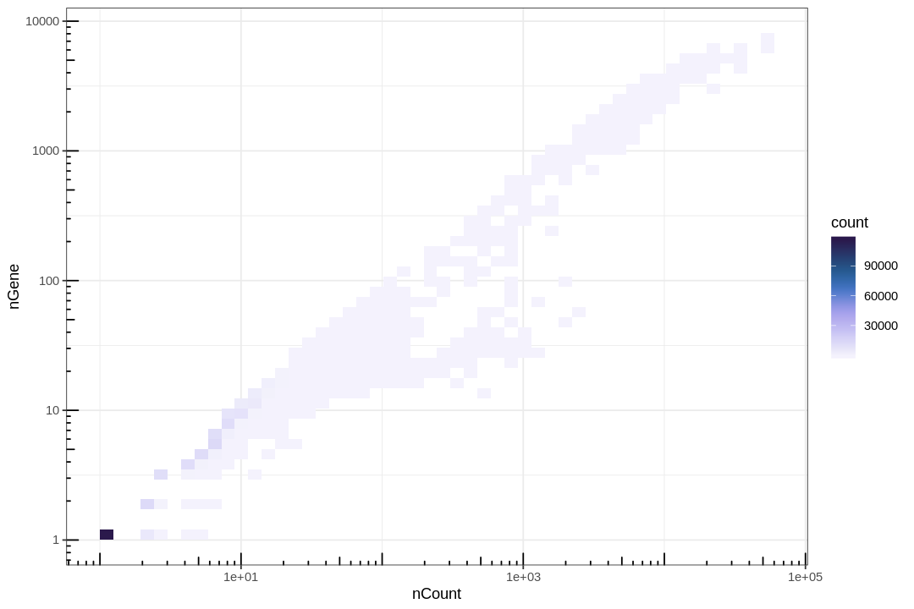
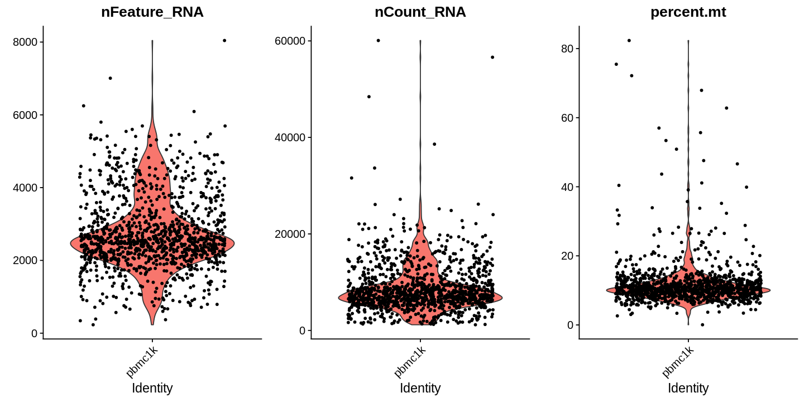
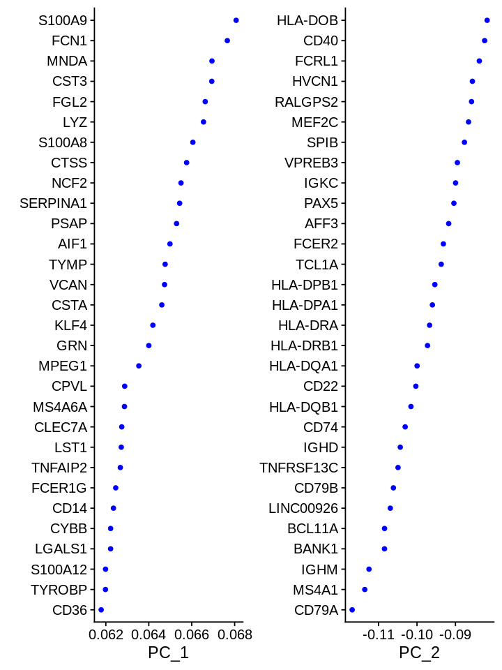
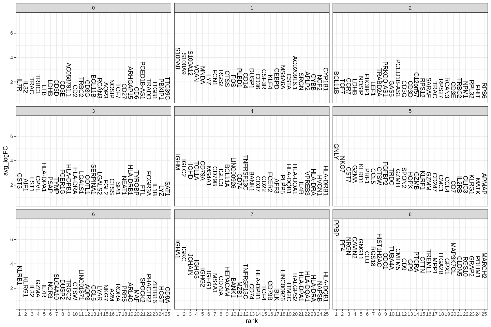
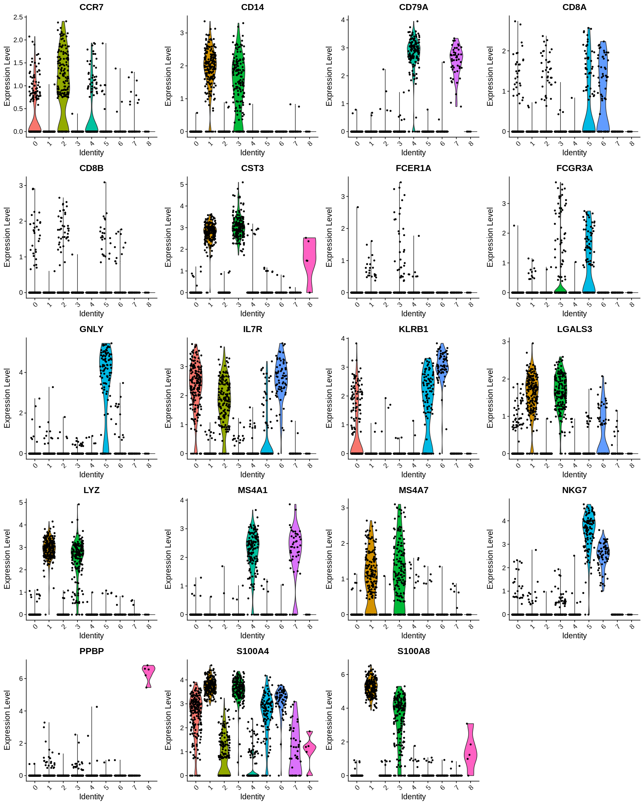
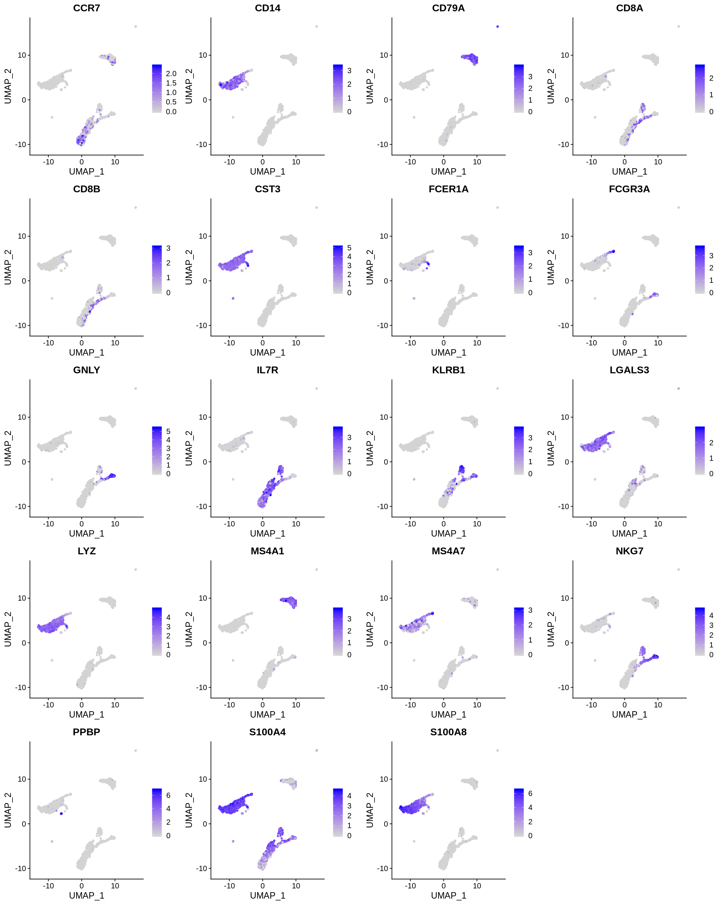
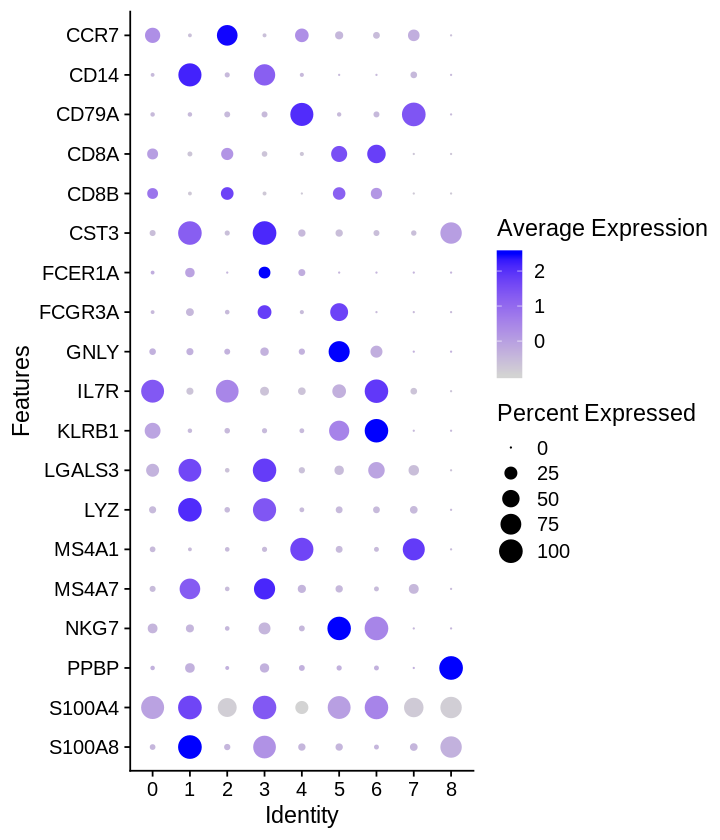
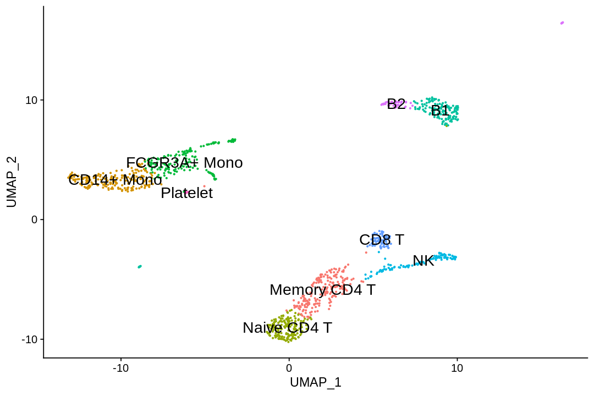

Analysis of single-cell RNA-seq data: building and annotating an atlas¶
This R notebook pre-processes the pbmc_1k v3 dataset from 10X Genomics with kallisto and bustools using kb, and then performs an analysis of the cell types and their marker genes.
The notebook was written by A. Sina Booeshaghi, Lambda Lu and Lior Pachter and is based on three noteboks: - The kallisto | bustools Introduction to single-cell RNA-seq I notebook. - The kallisto | bustools Introduction to single-cell RNA-seq II notebook. - The Seurat Guided Clustering Tutorial.
If you use the methods in this notebook for your analysis please cite the following publications which describe the tools used in the notebook:
- Melsted, P., Booeshaghi, A.S. et al. Modular and efficient pre-processing of single-cell RNA-seq. bioRxiv (2019). doi:10.1101/673285
- Stuart, Butler et al. Comprehensive Integration of Single-cell Data. Cell (2019). doi:10.1016/j.cell.2019.05.031
A Python notebook implementing the same analysis is available here. See the kallistobus.tools tutorials site for additional notebooks demonstrating other analyses.
Setup¶
1 2 | |
Install R packages¶
A large fraction of the running time of this notebook is in installing the Seurat R package, since it has lots of dependencies and many of them use Rcpp which results in the need to compile lots of C++ code. Compilation is required because CRAN does not distribute binaries for Linux, which is the operating system here.
1 2 3 | |
Installing package into ‘/usr/local/lib/R/site-library’
(as ‘lib’ is unspecified)
also installing the dependencies ‘bitops’, ‘gtools’, ‘caTools’, ‘sass’, ‘jquerylib’, ‘sitmo’, ‘globals’, ‘listenv’, ‘parallelly’, ‘plyr’, ‘zoo’, ‘data.table’, ‘gplots’, ‘reshape2’, ‘gridExtra’, ‘RcppArmadillo’, ‘httpuv’, ‘xtable’, ‘sourcetools’, ‘bslib’, ‘spatstat.data’, ‘spatstat.utils’, ‘spatstat.sparse’, ‘abind’, ‘tensor’, ‘goftest’, ‘deldir’, ‘polyclip’, ‘FNN’, ‘RSpectra’, ‘dqrng’, ‘cowplot’, ‘fitdistrplus’, ‘future’, ‘future.apply’, ‘ggrepel’, ‘ggridges’, ‘ica’, ‘igraph’, ‘irlba’, ‘leiden’, ‘lmtest’, ‘matrixStats’, ‘miniUI’, ‘patchwork’, ‘pbapply’, ‘plotly’, ‘png’, ‘RANN’, ‘RcppAnnoy’, ‘reticulate’, ‘ROCR’, ‘Rtsne’, ‘scattermore’, ‘sctransform’, ‘SeuratObject’, ‘shiny’, ‘spatstat.core’, ‘spatstat.geom’, ‘uwot’, ‘RcppEigen’, ‘RcppProgress’
user system elapsed
1923.767 192.391 1168.018
The package installation took 20 minutes (elapsed) which is 40% of the running time of the entire notebook. The user time is nearly twice the elapsed time here because 2 cores were used to install all those packages.
Install kb-python¶
1 2 | |
- 'Collecting kb-python'
- ' Downloading https://files.pythonhosted.org/packages/29/94/855ed1c11110a65a466cd95a6fef64958bad055f2678270b80a32e42cdb1/kb_python-0.25.1-py3-none-any.whl (59.1MB)'
- 'Requirement already satisfied: tqdm>=4.39.0 in /usr/local/lib/python3.7/dist-packages (from kb-python) (4.41.1)'
- 'Collecting loompy>=3.0.6'
- ' Downloading https://files.pythonhosted.org/packages/36/52/74ed37ae5988522fbf87b856c67c4f80700e6452410b4cd80498c5f416f9/loompy-3.0.6.tar.gz (41kB)'
- 'Requirement already satisfied: nbformat>=4.4.0 in /usr/local/lib/python3.7/dist-packages (from kb-python) (5.1.2)'
- 'Requirement already satisfied: h5py>=2.10.0 in /usr/local/lib/python3.7/dist-packages (from kb-python) (2.10.0)'
- 'Requirement already satisfied: requests>=2.19.0 in /usr/local/lib/python3.7/dist-packages (from kb-python) (2.23.0)'
- 'Requirement already satisfied: nbconvert>=5.6.0 in /usr/local/lib/python3.7/dist-packages (from kb-python) (5.6.1)'
- 'Requirement already satisfied: numpy>=1.17.2 in /usr/local/lib/python3.7/dist-packages (from kb-python) (1.19.5)'
- 'Collecting anndata>=0.6.22.post1'
- ' Downloading https://files.pythonhosted.org/packages/81/b1/743cc79f89d9db6dccbfb7e6000795acb218a6c6320b7a2337cad99bd047/anndata-0.7.5-py3-none-any.whl (119kB)'
- 'Collecting scanpy>=1.4.4.post1'
- ' Downloading https://files.pythonhosted.org/packages/c1/f4/a7848e6f990cf5bcbedade93702baf3e99ae704714563fe9bdceb3d597c7/scanpy-1.7.1-py3-none-any.whl (10.3MB)'
- 'Requirement already satisfied: Jinja2>2.10.1 in /usr/local/lib/python3.7/dist-packages (from kb-python) (2.11.3)'
- 'Collecting plotly>=4.5.0'
- ' Downloading https://files.pythonhosted.org/packages/1f/f6/bd3c17c8003b6641df1228e80e1acac97ed8402635e46c2571f8e1ef63af/plotly-4.14.3-py2.py3-none-any.whl (13.2MB)'
- 'Requirement already satisfied: scikit-learn>=0.21.3 in /usr/local/lib/python3.7/dist-packages (from kb-python) (0.22.2.post1)'
- 'Requirement already satisfied: scipy in /usr/local/lib/python3.7/dist-packages (from loompy>=3.0.6->kb-python) (1.4.1)'
- 'Requirement already satisfied: setuptools in /usr/local/lib/python3.7/dist-packages (from loompy>=3.0.6->kb-python) (54.2.0)'
- 'Requirement already satisfied: numba in /usr/local/lib/python3.7/dist-packages (from loompy>=3.0.6->kb-python) (0.51.2)'
- 'Requirement already satisfied: click in /usr/local/lib/python3.7/dist-packages (from loompy>=3.0.6->kb-python) (7.1.2)'
- 'Collecting numpy-groupies'
- ' Downloading https://files.pythonhosted.org/packages/99/eb/fc72b507219957cffdf2c5952e396cc04a30c2223e2fd789f4a744ffc52f/numpy_groupies-0.9.13.tar.gz (109kB)'
- 'Requirement already satisfied: jsonschema!=2.5.0,>=2.4 in /usr/local/lib/python3.7/dist-packages (from nbformat>=4.4.0->kb-python) (2.6.0)'
- 'Requirement already satisfied: traitlets>=4.1 in /usr/local/lib/python3.7/dist-packages (from nbformat>=4.4.0->kb-python) (5.0.5)'
- 'Requirement already satisfied: jupyter-core in /usr/local/lib/python3.7/dist-packages (from nbformat>=4.4.0->kb-python) (4.7.1)'
- 'Requirement already satisfied: ipython-genutils in /usr/local/lib/python3.7/dist-packages (from nbformat>=4.4.0->kb-python) (0.2.0)'
- 'Requirement already satisfied: six in /usr/local/lib/python3.7/dist-packages (from h5py>=2.10.0->kb-python) (1.15.0)'
- 'Requirement already satisfied: urllib3!=1.25.0,!=1.25.1,<1.26,>=1.21.1 in /usr/local/lib/python3.7/dist-packages (from requests>=2.19.0->kb-python) (1.24.3)'
- 'Requirement already satisfied: idna<3,>=2.5 in /usr/local/lib/python3.7/dist-packages (from requests>=2.19.0->kb-python) (2.10)'
- 'Requirement already satisfied: certifi>=2017.4.17 in /usr/local/lib/python3.7/dist-packages (from requests>=2.19.0->kb-python) (2020.12.5)'
- 'Requirement already satisfied: chardet<4,>=3.0.2 in /usr/local/lib/python3.7/dist-packages (from requests>=2.19.0->kb-python) (3.0.4)'
- 'Requirement already satisfied: entrypoints>=0.2.2 in /usr/local/lib/python3.7/dist-packages (from nbconvert>=5.6.0->kb-python) (0.3)'
- 'Requirement already satisfied: pygments in /usr/local/lib/python3.7/dist-packages (from nbconvert>=5.6.0->kb-python) (2.6.1)'
- 'Requirement already satisfied: bleach in /usr/local/lib/python3.7/dist-packages (from nbconvert>=5.6.0->kb-python) (3.3.0)'
- 'Requirement already satisfied: pandocfilters>=1.4.1 in /usr/local/lib/python3.7/dist-packages (from nbconvert>=5.6.0->kb-python) (1.4.3)'
- 'Requirement already satisfied: testpath in /usr/local/lib/python3.7/dist-packages (from nbconvert>=5.6.0->kb-python) (0.4.4)'
- 'Requirement already satisfied: mistune<2,>=0.8.1 in /usr/local/lib/python3.7/dist-packages (from nbconvert>=5.6.0->kb-python) (0.8.4)'
- 'Requirement already satisfied: defusedxml in /usr/local/lib/python3.7/dist-packages (from nbconvert>=5.6.0->kb-python) (0.7.1)'
- 'Requirement already satisfied: packaging in /usr/local/lib/python3.7/dist-packages (from anndata>=0.6.22.post1->kb-python) (20.9)'
- 'Requirement already satisfied: importlib-metadata>=0.7; python_version < "3.8" in /usr/local/lib/python3.7/dist-packages (from anndata>=0.6.22.post1->kb-python) (3.8.1)'
- 'Requirement already satisfied: pandas!=1.1,>=1.0 in /usr/local/lib/python3.7/dist-packages (from anndata>=0.6.22.post1->kb-python) (1.1.5)'
- 'Requirement already satisfied: natsort in /usr/local/lib/python3.7/dist-packages (from anndata>=0.6.22.post1->kb-python) (5.5.0)'
- 'Collecting umap-learn>=0.3.10'
- ' Downloading https://files.pythonhosted.org/packages/75/69/85e7f950bb75792ad5d666d86c5f3e62eedbb942848e7e3126513af9999c/umap-learn-0.5.1.tar.gz (80kB)'
- 'Requirement already satisfied: joblib in /usr/local/lib/python3.7/dist-packages (from scanpy>=1.4.4.post1->kb-python) (1.0.1)'
- 'Requirement already satisfied: seaborn in /usr/local/lib/python3.7/dist-packages (from scanpy>=1.4.4.post1->kb-python) (0.11.1)'
- 'Requirement already satisfied: statsmodels>=0.10.0rc2 in /usr/local/lib/python3.7/dist-packages (from scanpy>=1.4.4.post1->kb-python) (0.10.2)'
- 'Requirement already satisfied: patsy in /usr/local/lib/python3.7/dist-packages (from scanpy>=1.4.4.post1->kb-python) (0.5.1)'
- 'Requirement already satisfied: matplotlib>=3.1.2 in /usr/local/lib/python3.7/dist-packages (from scanpy>=1.4.4.post1->kb-python) (3.2.2)'
- 'Collecting sinfo'
- ' Downloading https://files.pythonhosted.org/packages/e1/4c/aef8456284f1a1c3645b938d9ca72388c9c4878e6e67b8a349c7d22fac78/sinfo-0.3.1.tar.gz'
- 'Collecting legacy-api-wrap'
- ' Downloading https://files.pythonhosted.org/packages/a4/68/da997bc56bb69dcdcee4054f0bc42266909307b905389fbc54c9158f42da/legacy_api_wrap-1.2-py3-none-any.whl'
- 'Requirement already satisfied: tables in /usr/local/lib/python3.7/dist-packages (from scanpy>=1.4.4.post1->kb-python) (3.4.4)'
- 'Requirement already satisfied: networkx>=2.3 in /usr/local/lib/python3.7/dist-packages (from scanpy>=1.4.4.post1->kb-python) (2.5)'
- 'Requirement already satisfied: MarkupSafe>=0.23 in /usr/local/lib/python3.7/dist-packages (from Jinja2>2.10.1->kb-python) (1.1.1)'
- 'Requirement already satisfied: retrying>=1.3.3 in /usr/local/lib/python3.7/dist-packages (from plotly>=4.5.0->kb-python) (1.3.3)'
- 'Requirement already satisfied: llvmlite<0.35,>=0.34.0.dev0 in /usr/local/lib/python3.7/dist-packages (from numba->loompy>=3.0.6->kb-python) (0.34.0)'
- 'Requirement already satisfied: webencodings in /usr/local/lib/python3.7/dist-packages (from bleach->nbconvert>=5.6.0->kb-python) (0.5.1)'
- 'Requirement already satisfied: pyparsing>=2.0.2 in /usr/local/lib/python3.7/dist-packages (from packaging->anndata>=0.6.22.post1->kb-python) (2.4.7)'
- 'Requirement already satisfied: typing-extensions>=3.6.4; python_version < "3.8" in /usr/local/lib/python3.7/dist-packages (from importlib-metadata>=0.7; python_version < "3.8"->anndata>=0.6.22.post1->kb-python) (3.7.4.3)'
- 'Requirement already satisfied: zipp>=0.5 in /usr/local/lib/python3.7/dist-packages (from importlib-metadata>=0.7; python_version < "3.8"->anndata>=0.6.22.post1->kb-python) (3.4.1)'
- 'Requirement already satisfied: python-dateutil>=2.7.3 in /usr/local/lib/python3.7/dist-packages (from pandas!=1.1,>=1.0->anndata>=0.6.22.post1->kb-python) (2.8.1)'
- 'Requirement already satisfied: pytz>=2017.2 in /usr/local/lib/python3.7/dist-packages (from pandas!=1.1,>=1.0->anndata>=0.6.22.post1->kb-python) (2018.9)'
- 'Collecting pynndescent>=0.5'
- ' Downloading https://files.pythonhosted.org/packages/af/65/8189298dd3a05bbad716ee8e249764ff8800e365d8dc652ad2192ca01b4a/pynndescent-0.5.2.tar.gz (1.1MB)'
- 'Requirement already satisfied: cycler>=0.10 in /usr/local/lib/python3.7/dist-packages (from matplotlib>=3.1.2->scanpy>=1.4.4.post1->kb-python) (0.10.0)'
- 'Requirement already satisfied: kiwisolver>=1.0.1 in /usr/local/lib/python3.7/dist-packages (from matplotlib>=3.1.2->scanpy>=1.4.4.post1->kb-python) (1.3.1)'
- 'Collecting stdlib_list'
- ' Downloading https://files.pythonhosted.org/packages/7a/b1/52f59dcf31ead2f0ceff8976288449608d912972b911f55dff712cef5719/stdlib_list-0.8.0-py3-none-any.whl (63kB)'
- 'Collecting get-version>=2.0.4'
- ' Downloading https://files.pythonhosted.org/packages/23/48/7610e884e62fff2183e7bc8592397c39a020267fb5147905fcd3f9cc820c/get_version-2.1-py3-none-any.whl (43kB)'
- 'Requirement already satisfied: numexpr>=2.5.2 in /usr/local/lib/python3.7/dist-packages (from tables->scanpy>=1.4.4.post1->kb-python) (2.7.3)'
- 'Requirement already satisfied: decorator>=4.3.0 in /usr/local/lib/python3.7/dist-packages (from networkx>=2.3->scanpy>=1.4.4.post1->kb-python) (4.4.2)'
- 'Building wheels for collected packages: loompy, numpy-groupies, umap-learn, sinfo, pynndescent'
- ' Building wheel for loompy (setup.py): started'
- ' Building wheel for loompy (setup.py): finished with status \'done\''
- ' Created wheel for loompy: filename=loompy-3.0.6-cp37-none-any.whl size=47896 sha256=9a9ab62e41414913f9bbfb2eef13596a38bc9dd39316cabab892f51143ed4d10'
- ' Stored in directory: /root/.cache/pip/wheels/f9/a4/90/5a98ad83419732b0fba533b81a2a52ba3dbe230a936ca4cdc9'
- ' Building wheel for numpy-groupies (setup.py): started'
- ' Building wheel for numpy-groupies (setup.py): finished with status \'done\''
- ' Created wheel for numpy-groupies: filename=numpy_groupies-0.9.13-cp37-none-any.whl size=24068 sha256=bb4d7f7f96af13b58c827bf94f338dd2559b83522f750c17546667d33088ca2e'
- ' Stored in directory: /root/.cache/pip/wheels/ef/97/d7/270bc85eb8b1b84629caac97a3900bff23edb7f834f6ed729e'
- ' Building wheel for umap-learn (setup.py): started'
- ' Building wheel for umap-learn (setup.py): finished with status \'done\''
- ' Created wheel for umap-learn: filename=umap_learn-0.5.1-cp37-none-any.whl size=76569 sha256=627ba759b3e6d1787390e59be46a8ee88ea2f8e3961907069df003122d8e052c'
- ' Stored in directory: /root/.cache/pip/wheels/ad/df/d5/a3691296ff779f25cd1cf415a3af954b987fb53111e3392cf4'
- ' Building wheel for sinfo (setup.py): started'
- ' Building wheel for sinfo (setup.py): finished with status \'done\''
- ' Created wheel for sinfo: filename=sinfo-0.3.1-cp37-none-any.whl size=7012 sha256=0a7ca4b4b981f9ff8c0ebc0f677119dfa8e32cb5746fca18b261ae01f0f18e7e'
- ' Stored in directory: /root/.cache/pip/wheels/11/f0/23/347d6d8e59787c2bc272162d18223dc3b45bd6dc40aceee6af'
- ' Building wheel for pynndescent (setup.py): started'
- ' Building wheel for pynndescent (setup.py): finished with status \'done\''
- ' Created wheel for pynndescent: filename=pynndescent-0.5.2-cp37-none-any.whl size=51351 sha256=46d4d6df8cbd2dabd69c0f051626ff9b8978fb9141ff68278e7c7d83ec086277'
- ' Stored in directory: /root/.cache/pip/wheels/ba/52/4e/4c28d04d144a28f89e2575fb63628df6e6d49b56c5ddd0c74e'
- 'Successfully built loompy numpy-groupies umap-learn sinfo pynndescent'
- 'Installing collected packages: numpy-groupies, loompy, anndata, pynndescent, umap-learn, stdlib-list, sinfo, get-version, legacy-api-wrap, scanpy, plotly, kb-python'
- ' Found existing installation: plotly 4.4.1'
- ' Uninstalling plotly-4.4.1:'
- ' Successfully uninstalled plotly-4.4.1'
- 'Successfully installed anndata-0.7.5 get-version-2.1 kb-python-0.25.1 legacy-api-wrap-1.2 loompy-3.0.6 numpy-groupies-0.9.13 plotly-4.14.3 pynndescent-0.5.2 scanpy-1.7.1 sinfo-0.3.1 stdlib-list-0.8.0 umap-learn-0.5.1'
Download the data¶
1 2 3 | |
- 'pbmc_1k_v3_fastqs/'
- 'pbmc_1k_v3_fastqs/pbmc_1k_v3_S1_L001_R2_001.fastq.gz'
- 'pbmc_1k_v3_fastqs/pbmc_1k_v3_S1_L002_I1_001.fastq.gz'
- 'pbmc_1k_v3_fastqs/pbmc_1k_v3_S1_L001_R1_001.fastq.gz'
- 'pbmc_1k_v3_fastqs/pbmc_1k_v3_S1_L002_R1_001.fastq.gz'
- 'pbmc_1k_v3_fastqs/pbmc_1k_v3_S1_L002_R2_001.fastq.gz'
- 'pbmc_1k_v3_fastqs/pbmc_1k_v3_S1_L001_I1_001.fastq.gz'
Download an index¶
1 | |
Pseudoalignment and counting¶
Run kallisto and bustools¶
1 | |
Basic QC¶
1 2 3 4 5 | |
Attaching SeuratObject
Warning message in system("timedatectl", intern = TRUE):
“running command 'timedatectl' had status 1”
Registered S3 method overwritten by 'cli':
method from
print.boxx spatstat.geom
── [1mAttaching packages[22m ─────────────────────────────────────── tidyverse 1.3.0 ──
[32m✔[39m [34mggplot2[39m 3.3.3 [32m✔[39m [34mpurrr [39m 0.3.4
[32m✔[39m [34mtibble [39m 3.1.0 [32m✔[39m [34mdplyr [39m 1.0.5
[32m✔[39m [34mtidyr [39m 1.1.3 [32m✔[39m [34mstringr[39m 1.4.0
[32m✔[39m [34mreadr [39m 1.4.0 [32m✔[39m [34mforcats[39m 0.5.1
── [1mConflicts[22m ────────────────────────────────────────── tidyverse_conflicts() ──
[31m✖[39m [34mtidyr[39m::[32mexpand()[39m masks [34mMatrix[39m::expand()
[31m✖[39m [34mdplyr[39m::[32mfilter()[39m masks [34mstats[39m::filter()
[31m✖[39m [34mdplyr[39m::[32mlag()[39m masks [34mstats[39m::lag()
[31m✖[39m [34mtidyr[39m::[32mpack()[39m masks [34mMatrix[39m::pack()
[31m✖[39m [34mtidyr[39m::[32munpack()[39m masks [34mMatrix[39m::unpack()
1 | |
- 'index.idx'
- 'output/10xv3_whitelist.txt'
- 'output/counts_filtered/cells_x_genes.barcodes.txt'
- 'output/counts_filtered/cells_x_genes.genes.txt'
- 'output/counts_filtered/cells_x_genes.mtx'
- 'output/counts_unfiltered/cells_x_genes.barcodes.txt'
- 'output/counts_unfiltered/cells_x_genes.genes.txt'
- 'output/counts_unfiltered/cells_x_genes.mtx'
- 'output/filter_barcodes.txt'
- 'output/inspect.json'
- 'output/kb_info.json'
- 'output/matrix.ec'
- 'output/output.bus'
- 'output/output.filtered.bus'
- 'output/output.unfiltered.bus'
- 'output/run_info.json'
- 'output/transcripts.txt'
- 'pbmc_1k_v3_fastqs.tar'
- 'pbmc_1k_v3_fastqs/pbmc_1k_v3_S1_L001_I1_001.fastq.gz'
- 'pbmc_1k_v3_fastqs/pbmc_1k_v3_S1_L001_R1_001.fastq.gz'
- 'pbmc_1k_v3_fastqs/pbmc_1k_v3_S1_L001_R2_001.fastq.gz'
- 'pbmc_1k_v3_fastqs/pbmc_1k_v3_S1_L002_I1_001.fastq.gz'
- 'pbmc_1k_v3_fastqs/pbmc_1k_v3_S1_L002_R1_001.fastq.gz'
- 'pbmc_1k_v3_fastqs/pbmc_1k_v3_S1_L002_R2_001.fastq.gz'
- 'sample_data/anscombe.json'
- 'sample_data/california_housing_test.csv'
- 'sample_data/california_housing_train.csv'
- 'sample_data/mnist_test.csv'
- 'sample_data/mnist_train_small.csv'
- 'sample_data/README.md'
- 't2g.txt'
1 2 3 4 5 6 7 8 9 10 11 12 13 14 | |
1 | |
1 | |
- 60623
- 259615
Test for library saturation¶
1 2 3 | |
1 2 3 4 | |
Warning message:
“Transformation introduced infinite values in continuous x-axis”
Warning message:
“Transformation introduced infinite values in continuous y-axis”

This plot is very misleading, as even the small alpha can't accurately show how many points are stacked at one location.
1 2 3 4 | |
Warning message:
“Transformation introduced infinite values in continuous x-axis”
Warning message:
“Transformation introduced infinite values in continuous y-axis”
Warning message:
“Removed 19583 rows containing non-finite values (stat_bin2d).”

Lots of points are piled at around 1 gene and 1 count, and those with 0 gene or count were removed for introducing -Inf in log transform. These correspond to empty or near empty droplets.
Examine the knee plot¶
The "knee plot" was introduced in the Drop-seq paper: - Macosko et al., Highly parallel genome-wide expression profiling of individual cells using nanoliter droplets, 2015. DOI:10.1016/j.cell.2015.05.002
In this plot cells are ordered by the number of UMI counts associated to them (shown on the x-axis), and the fraction of droplets with at least that number of cells is shown on the y-axis:
1 | |
Min. 1st Qu. Median Mean 3rd Qu. Max.
0.00 1.00 1.00 43.64 6.00 60120.00
1 2 3 4 5 6 7 8 9 10 11 12 13 14 15 16 17 18 19 20 21 22 23 24 25 26 27 28 29 30 31 32 33 34 35 36 37 38 39 40 41 42 43 44 45 46 47 48 49 50 51 52 53 54 55 56 57 58 59 60 61 62 63 64 65 66 67 68 69 70 | |
1 2 3 4 | |

Analysis¶
We begin by asking for genes with the highest proportions in droplets (prior to filtering out empty droplets).
1 2 | |
[36m──[39m [1m[1mColumn specification[1m[22m [36m────────────────────────────────────────────────────────[39m
cols(
transcript = [31mcol_character()[39m,
gene = [31mcol_character()[39m,
gene_name = [31mcol_character()[39m
)
1 2 3 4 5 6 7 8 9 10 11 12 13 14 15 16 17 18 19 | |
1 2 | |
Warning message:
“Removed 391660 rows containing non-finite values (stat_boxplot).”

For many barcodes, the top genes by proportion of all counts are ribosomal or mitochondrial genes. Also, the proportions plotted above seem to have some discrete values; this effect is a result of computing fractions with small denominator, which happens when droplets produce very few UMI counts.
Filter¶
1 2 3 | |
- 31861
- 1322
1 2 | |
1 | |
Warning message:
“Non-unique features (rownames) present in the input matrix, making unique”
Warning message:
“Feature names cannot have underscores ('_'), replacing with dashes ('-')”
An object of class Seurat
25966 features across 1208 samples within 1 assay
Active assay: RNA (25966 features, 0 variable features)
The steps below constitute a standard analysis worklow for single-cell RNA-seq data.
1 2 | |
The number of unique genes and total molecules are automatically calculated when running the CreateSeuratObject command.
The associated data is stored in the object metadata.
1 2 | |
| orig.ident | nCount_RNA | nFeature_RNA | percent.mt | |
|---|---|---|---|---|
| <fct> | <dbl> | <int> | <dbl> | |
| AAACCCAAGGAGAGTA | pbmc1k | 9289 | 3198 | 11.271396 |
| AAACGCTTCAGCCCAG | pbmc1k | 6483 | 2513 | 8.252352 |
| AAAGAACAGACGACTG | pbmc1k | 5011 | 2082 | 6.166434 |
| AAAGAACCAATGGCAG | pbmc1k | 3264 | 1555 | 6.893382 |
| AAAGAACGTCTGCAAT | pbmc1k | 7488 | 2508 | 6.610577 |
Next, we visualize some QC metrics and use the results to set filtering criteria.
1 2 3 | |

1 2 3 4 5 | |

1 | |
Normalize¶
After removing unwanted cells from the dataset, the next step is to normalize the data. A standard choice is LogNormalize which normalizes the UMI counts for each cell by the total counts, multiplies this by a scale factor (10,000 by default), and finally log-transforms the result.
We recommend the preprint - Breda, J., Zavolan, M. and van Nimwegen, E. Bayesian inference of the gene expression states of single cells from scRNA-seq data. bioRxiv (2019). doi.org/10.1101/2019.12.28.889956
for a thorough discussion of normalization.
1 | |
For clarity, in this previous line of code (and in future commands), we provide the default values for certain parameters in the function call. However, this isn’t required and the same behavior can be achieved with:
1 | |
Highly expressed genes¶
To identify a subset of genes that exhibit high cell-to-cell variation in the dataset we apply a procedure implemented in the FindVariableFeatures function. By default, it returns 2,000 genes per dataset. These will be used in downstream analysis.
Seurat documentation describes the method used to find highly variable genes here as such:
First, fits a line to the relationship of log(variance) and log(mean) using local polynomial regression (loess). Then standardizes the feature values using the observed mean and expected variance (given by the fitted line). Feature variance is then calculated on the standardized values after clipping to a maximum (see clip.max parameter).
1 2 | |

1 2 3 4 5 6 7 8 9 | |
When using repel, set xnudge and ynudge to 0 for optimal results

Scaling the data¶
Next, we apply a linear transformation (‘scaling’) that is a standard pre-processing step prior to dimensional reduction techniques like PCA. The ScaleData function shifts the expression of each gene, so that the mean expression across cells is 0 and the variance across cells is 1 This step gives equal weight to genes in downstream analyses, so that highly-expressed genes do not dominate.
1 2 | |
Centering and scaling data matrix
We apply this only to the genes identified as highly variable:
1 | |
The scaling does not affect PCA or clustering results. However, Seurat heatmaps (produced as shown below with DoHeatmap) require genes in the heatmap to be scaled so that highly-expressed genes don’t dominate. To make sure we don’t leave any genes out of the heatmap later, we are scaling all genes in this tutorial.
In Seurat v2 we also use the ScaleData function to remove unwanted sources of variation from a single-cell dataset. For example, we could ‘regress out’ heterogeneity associated with (for example) cell cycle stage, or mitochondrial contamination. These features are still supported in ScaleData in Seurat v3, i.e.:
1 | |
Principal component analysis¶
Next we perform PCA on the scaled data. By default, only the previously determined variable features are used as input.
1 | |
PC_ 1
Positive: S100A9, FCN1, MNDA, FGL2, S100A8, CTSS, CST3, SERPINA1, PSAP, NCF2
LYZ, AIF1, TYMP, VCAN, KLF4, GRN, CSTA, MPEG1, CPVL, CLEC7A
LST1, MS4A6A, CD14, LGALS1, S100A12, TYROBP, TNFAIP2, FCER1G, CD36, CSF3R
Negative: LTB, TRAC, TRBC2, CD3D, IL32, BCL11B, CD3G, IL7R, TCF7, CD69
ISG20, CD247, CD27, SPOCK2, ARL4C, CD7, CD2, GZMM, TRBC1, CD6
PRKCQ-AS1, NOSIP, AC058791.1, RORA, CTSW, CCR7, AQP3, ITM2A, PEBP1, SAMD3
PC_ 2
Positive: CD79A, MS4A1, IGHM, BANK1, BCL11A, LINC00926, CD79B, TNFRSF13C, IGHD, CD74
HLA-DQB1, CD22, HLA-DQA1, HLA-DRB1, HLA-DRA, HLA-DPA1, HLA-DPB1, TCL1A, FCER2, AFF3
PAX5, IGKC, VPREB3, SPIB, MEF2C, RALGPS2, HVCN1, FCRL1, HLA-DOB, HLA-DMA
Negative: IL32, CD247, GZMM, CD7, CTSW, CD3D, GZMA, NKG7, S100A4, TRAC
ANXA1, BCL11B, PRF1, CST7, KLRB1, CD3G, IL7R, ARL4C, SAMD3, CD2
TRBC1, CCL5, KLRG1, A2M, MT2A, RORA, ITGB2, GNLY, TCF7, MATK
PC_ 3
Positive: CAVIN2, GP9, PF4, GNG11, PPBP, CD9, TREML1, CMTM5, TUBB1, SPARC
CLU, HIST1H2AC, ACRBP, PTCRA, PRKAR2B, NRGN, ITGA2B, CTTN, TMEM40, TSC22D1
AC147651.1, GMPR, PF4V1, CLDN5, CA2, MAP3K7CL, PGRMC1, CXCR2P1, HIST1H3H, MMD
Negative: CYBA, VIM, FOS, ITGB2, NEAT1, HNRNPU, CALR, LSP1, LCP1, DUSP1
S100A10, S100A6, KLF6, CD74, PLAC8, LTB, ZFP36L1, S100A4, IFITM2, ISG20
SPCS1, SEC61B, ANXA1, MCL1, EVI2B, HSPA5, APOBEC3G, HSP90B1, PEBP1, AC020916.1
PC_ 4
Positive: LEF1, TCF7, IL7R, MAL, CCR7, BCL11B, CD3D, NOSIP, LTB, CD3G
TRAC, CAMK4, NELL2, PASK, CD27, EGR1, SLC2A3, RGCC, FHIT, RGS10
CD6, CD40LG, VIM, INPP4B, ADTRP, TRAT1, NOG, TSHZ2, PRKCQ-AS1, TESPA1
Negative: GZMB, GNLY, CLIC3, NKG7, KLRF1, PRF1, CST7, SPON2, FGFBP2, KLRD1
GZMA, ADGRG1, CCL4, TRDC, HOPX, MATK, IL2RB, TTC38, APOBEC3G, CTSW
TBX21, RHOC, C12orf75, S1PR5, FCGR3A, SH2D1B, PTGDR, MYOM2, CMC1, GZMH
PC_ 5
Positive: LILRA4, SCT, PACSIN1, SMPD3, LRRC26, SERPINF1, TPM2, AL096865.1, IL3RA, DNASE1L3
TNFRSF21, CUX2, PLD4, ITM2C, GAS6, MYBL2, CLEC4C, PPP1R14B, EPHA2, UGCG
PPP1R14B-AS1, CUEDC1, LAMP5, RUNX2, PPM1J, SERPINF2, NRP1, DERL3, LINC02812, CIB2
Negative: GNLY, FGFBP2, KLRF1, PRF1, NKG7, CCL4, CST7, KLRD1, MS4A1, IGHD
LINC00926, ADGRG1, CD79B, CD79A, TRDC, CD22, GZMA, TBX21, SPON2, TNFRSF13C
MATK, FCER2, IL2RB, PAX5, MYOM2, HOPX, S1PR5, TTC38, SH2D1B, BANK1
Seurat provides several useful ways of visualizing both cells and features that define the PCA, including VizDimReduction, DimPlot, and DimHeatmap
1 2 | |
PC_ 1
Positive: S100A9, FCN1, MNDA, FGL2, S100A8
Negative: LTB, TRAC, TRBC2, CD3D, IL32
PC_ 2
Positive: CD79A, MS4A1, IGHM, BANK1, BCL11A
Negative: IL32, CD247, GZMM, CD7, CTSW
PC_ 3
Positive: CAVIN2, GP9, PF4, GNG11, PPBP
Negative: CYBA, VIM, FOS, ITGB2, NEAT1
PC_ 4
Positive: LEF1, TCF7, IL7R, MAL, CCR7
Negative: GZMB, GNLY, CLIC3, NKG7, KLRF1
PC_ 5
Positive: LILRA4, SCT, PACSIN1, SMPD3, LRRC26
Negative: GNLY, FGFBP2, KLRF1, PRF1, NKG7
Which genes are contributing the most to the first 2 PCs?
1 2 | |

1 2 | |

Determining dimensionality¶
To overcome the extensive technical noise in any single feature for scRNA-seq data, one can cluster cells based on their PCA projections, with each PC essentially representing a ‘metafeature’ that combines information across a correlated feature set.
A common heuristic method generates an ‘Elbow plot’: a ranking of principle components based on the percentage of variance explained by each one (ElbowPlot function). In this example, we can observe an ‘elbow’ around PC9-10, suggesting that the majority of true signal is captured in the first 10 PCs.
1 2 | |

The neighborhood graph¶
We cluster cells using the Louvain algorithm (a default in Seurat), which iteratively group cells together, with the goal of optimizing the standard modularity function. The FindClusters function implements this procedure, and contains a resolution parameter that sets the ‘granularity’ of the downstream clustering, with increased values leading to a greater number of clusters. We find that setting this parameter between 0.4-1.2 typically returns good results for single-cell datasets of around 3K cells. Optimal resolution often increases for larger datasets. The clusters can be found using the Idents function.
1 2 | |
Computing nearest neighbor graph
Computing SNN
Modularity Optimizer version 1.3.0 by Ludo Waltman and Nees Jan van Eck
Number of nodes: 1138
Number of edges: 35679
Running Louvain algorithm...
Maximum modularity in 10 random starts: 0.8720
Number of communities: 9
Elapsed time: 0 seconds
1 2 | |
- AAACCCAAGGAGAGTA
- 0
- AAACGCTTCAGCCCAG
- 3
- AAAGAACAGACGACTG
- 5
- AAAGAACCAATGGCAG
- 5
- AAAGAACGTCTGCAAT
- 1
Levels:
- '0'
- '1'
- '2'
- '3'
- '4'
- '5'
- '6'
- '7'
- '8'
UMAP and t-SNE¶
tSNE and UMAP can be used to visualize and explore non-linear aspects of high-dimensional data. Here we apply these methods to the PC projection of the data (with same dimension as used for clustering).
UMAP (UMAP: Uniform Manifold Approximation and Projection for Dimension Reduction) is a manifold learning technique that can also be used to visualize cells. It was published in:
- McInnes, Leland, John Healy, and James Melville. "Umap: Uniform manifold approximation and projection for dimension reduction." arXiv preprint arXiv:1802.03426 (2018).
t-SNE is a non-linear dimensionality reduction technique described in:
- Maaten, Laurens van der, and Geoffrey Hinton. "Visualizing data using t-SNE." Journal of machine learning research 9.Nov (2008): 2579-2605.
1 | |
Warning message:
“The default method for RunUMAP has changed from calling Python UMAP via reticulate to the R-native UWOT using the cosine metric
To use Python UMAP via reticulate, set umap.method to 'umap-learn' and metric to 'correlation'
This message will be shown once per session”
1 2 3 | |

1 2 3 | |

Finding differentially expressed features (cluster biomarkers)¶
A key follow-up step to clustering cells is to find gene markers that are associated with them. We used Seurat's FindAllMarkers function which automates the process for all clusters.
The min.pct argument requires a feature to be detected at a minimum percentage in either of the two groups of cells, and the thresh.test argument requires a feature to be differentially expressed (on average) by some amount between the two groups. You can set both of these to 0, but with a dramatic increase in time - since this will test a large number of features that are unlikely to be highly discriminatory. As another option to speed up these computations, max.cells.per.ident can be set. This will downsample each identity class to have no more cells than whatever this is set to. While there is generally going to be a loss in power, the speed increases can be significiant and the most highly differentially expressed features will likely still rise to the top.
1 2 3 4 5 6 7 8 9 10 11 | |
Several methods for differential expression are supported by Seurat. The default is Wilcoxon rank sum test.
1 2 3 | |
Calculating cluster 0
For a more efficient implementation of the Wilcoxon Rank Sum Test,
(default method for FindMarkers) please install the limma package
--------------------------------------------
install.packages('BiocManager')
BiocManager::install('limma')
--------------------------------------------
After installation of limma, Seurat will automatically use the more
efficient implementation (no further action necessary).
This message will be shown once per session
Calculating cluster 1
Calculating cluster 2
Calculating cluster 3
Calculating cluster 4
Calculating cluster 5
Calculating cluster 6
Calculating cluster 7
Calculating cluster 8
1 | |
| p_val | avg_log2FC | pct.1 | pct.2 | p_val_adj | cluster | gene | |
|---|---|---|---|---|---|---|---|
| <dbl> | <dbl> | <dbl> | <dbl> | <dbl> | <fct> | <chr> | |
| S100A12 | 4.064804e-197 | 4.213263 | 0.978 | 0.076 | 1.055467e-192 | 0 | S100A12 |
| VCAN | 3.352042e-189 | 3.484980 | 0.996 | 0.104 | 8.703913e-185 | 0 | VCAN |
| S100A8 | 4.318649e-186 | 5.520490 | 1.000 | 0.143 | 1.121380e-181 | 0 | S100A8 |
| CD14 | 7.936720e-173 | 2.574749 | 0.944 | 0.088 | 2.060849e-168 | 0 | CD14 |
| S100A9 | 7.548587e-171 | 4.954452 | 0.996 | 0.197 | 1.960066e-166 | 0 | S100A9 |
| MNDA | 4.262766e-170 | 3.039318 | 0.981 | 0.130 | 1.106870e-165 | 0 | MNDA |
1 2 | |
Student's t test is also supported
1 2 | |
Calculating cluster 0
Calculating cluster 1
Calculating cluster 2
Calculating cluster 3
Calculating cluster 4
Calculating cluster 5
Calculating cluster 6
Calculating cluster 7
Calculating cluster 8
1 | |

Also logistic regression to test how good each gene is for deciding whether a cell is in a cluster.
1 2 | |
Calculating cluster 0
Calculating cluster 1
Calculating cluster 2
Calculating cluster 3
Calculating cluster 4
Calculating cluster 5
Calculating cluster 6
Calculating cluster 7
Warning message:
“glm.fit: fitted probabilities numerically 0 or 1 occurred”
Calculating cluster 8
Warning message:
“glm.fit: algorithm did not converge”
Warning message:
“glm.fit: fitted probabilities numerically 0 or 1 occurred”
Warning message:
“glm.fit: algorithm did not converge”
Warning message:
“glm.fit: fitted probabilities numerically 0 or 1 occurred”
Warning message:
“glm.fit: algorithm did not converge”
Warning message:
“glm.fit: fitted probabilities numerically 0 or 1 occurred”
Warning message:
“glm.fit: algorithm did not converge”
Warning message:
“glm.fit: fitted probabilities numerically 0 or 1 occurred”
Warning message:
“glm.fit: algorithm did not converge”
Warning message:
“glm.fit: fitted probabilities numerically 0 or 1 occurred”
Warning message:
“glm.fit: algorithm did not converge”
Warning message:
“glm.fit: fitted probabilities numerically 0 or 1 occurred”
Warning message:
“glm.fit: fitted probabilities numerically 0 or 1 occurred”
Warning message:
“glm.fit: algorithm did not converge”
Warning message:
“glm.fit: fitted probabilities numerically 0 or 1 occurred”
Warning message:
“glm.fit: algorithm did not converge”
Warning message:
“glm.fit: fitted probabilities numerically 0 or 1 occurred”
Warning message:
“glm.fit: fitted probabilities numerically 0 or 1 occurred”
Warning message:
“glm.fit: fitted probabilities numerically 0 or 1 occurred”
Warning message:
“glm.fit: algorithm did not converge”
Warning message:
“glm.fit: fitted probabilities numerically 0 or 1 occurred”
Warning message:
“glm.fit: fitted probabilities numerically 0 or 1 occurred”
Warning message:
“glm.fit: fitted probabilities numerically 0 or 1 occurred”
Warning message:
“glm.fit: algorithm did not converge”
Warning message:
“glm.fit: fitted probabilities numerically 0 or 1 occurred”
Warning message:
“glm.fit: algorithm did not converge”
Warning message:
“glm.fit: fitted probabilities numerically 0 or 1 occurred”
Warning message:
“glm.fit: algorithm did not converge”
Warning message:
“glm.fit: fitted probabilities numerically 0 or 1 occurred”
Warning message:
“glm.fit: fitted probabilities numerically 0 or 1 occurred”
1 | |

Seurat includes several tools for visualizing marker expression. VlnPlot (shows expression probability distributions across clusters), and FeaturePlot (visualizes feature expression on a tSNE or PCA plot) are our most commonly used visualizations. We also suggest exploring RidgePlot, CellScatter, and DotPlot as additional methods to view your dataset.
1 2 3 4 | |
1 2 | |

1 2 | |

Assigning cell type identity to clusters¶
In this dataset, we can use canonical markers to easily match the de novo clustering to known cell types:
| Cluster ID | Markers | Cell Type |
|---|---|---|
| 0 | CD14, LYZ | CD14+ Mono |
| 1 | IL7R, S100A4 | Memory CD4+ T |
| 2 | IL7R, CCR7 | Naive CD4+ |
| 3 | MS4A1, CD79A | B |
| 4 | FCGR3A, MS4A7 | FCGR3A+ Mono |
| 5 | GNLY, NKG7 | NK |
| 6 | CD8A | CD8+ T |
| 7 | MS4A1, CD79A | B |
| 8 | PPBP | Platelet |
1 2 3 | |

1 2 3 4 5 6 | |

1 | |
Time difference of 50.73962 mins
1 | |
R version 4.0.4 (2021-02-15)
Platform: x86_64-pc-linux-gnu (64-bit)
Running under: Ubuntu 18.04.5 LTS
Matrix products: default
BLAS: /usr/lib/x86_64-linux-gnu/openblas/libblas.so.3
LAPACK: /usr/lib/x86_64-linux-gnu/libopenblasp-r0.2.20.so
locale:
[1] LC_CTYPE=en_US.UTF-8 LC_NUMERIC=C
[3] LC_TIME=en_US.UTF-8 LC_COLLATE=en_US.UTF-8
[5] LC_MONETARY=en_US.UTF-8 LC_MESSAGES=en_US.UTF-8
[7] LC_PAPER=en_US.UTF-8 LC_NAME=C
[9] LC_ADDRESS=C LC_TELEPHONE=C
[11] LC_MEASUREMENT=en_US.UTF-8 LC_IDENTIFICATION=C
attached base packages:
[1] stats graphics grDevices utils datasets methods base
other attached packages:
[1] patchwork_1.1.1 forcats_0.5.1 stringr_1.4.0 dplyr_1.0.5
[5] purrr_0.3.4 readr_1.4.0 tidyr_1.1.3 tibble_3.1.0
[9] ggplot2_3.3.3 tidyverse_1.3.0 Matrix_1.3-2 SeuratObject_4.0.0
[13] Seurat_4.0.1
loaded via a namespace (and not attached):
[1] Rtsne_0.15 colorspace_2.0-0 deldir_0.2-10
[4] ellipsis_0.3.1 ggridges_0.5.3 IRdisplay_1.0
[7] fs_1.5.0 base64enc_0.1-3 rstudioapi_0.13
[10] spatstat.data_2.1-0 farver_2.1.0 leiden_0.3.7
[13] listenv_0.8.0 ggrepel_0.9.1 RSpectra_0.16-0
[16] lubridate_1.7.10 fansi_0.4.2 xml2_1.3.2
[19] codetools_0.2-18 splines_4.0.4 polyclip_1.10-0
[22] IRkernel_1.1.1 jsonlite_1.7.2 broom_0.7.5
[25] ica_1.0-2 cluster_2.1.1 dbplyr_2.1.0
[28] png_0.1-7 uwot_0.1.10 shiny_1.6.0
[31] sctransform_0.3.2 spatstat.sparse_2.0-0 compiler_4.0.4
[34] httr_1.4.2 backports_1.2.1 assertthat_0.2.1
[37] fastmap_1.1.0 lazyeval_0.2.2 cli_2.3.1
[40] later_1.1.0.1 htmltools_0.5.1.1 tools_4.0.4
[43] igraph_1.2.6 gtable_0.3.0 glue_1.4.2
[46] RANN_2.6.1 reshape2_1.4.4 Rcpp_1.0.6
[49] scattermore_0.7 cellranger_1.1.0 vctrs_0.3.6
[52] nlme_3.1-152 lmtest_0.9-38 ps_1.6.0
[55] globals_0.14.0 rvest_1.0.0 mime_0.10
[58] miniUI_0.1.1.1 lifecycle_1.0.0 irlba_2.3.3
[61] goftest_1.2-2 future_1.21.0 MASS_7.3-53.1
[64] zoo_1.8-9 scales_1.1.1 spatstat.core_2.0-0
[67] hms_1.0.0 promises_1.2.0.1 spatstat.utils_2.1-0
[70] parallel_4.0.4 RColorBrewer_1.1-2 reticulate_1.18
[73] pbapply_1.4-3 gridExtra_2.3 rpart_4.1-15
[76] stringi_1.5.3 repr_1.1.3 rlang_0.4.10
[79] pkgconfig_2.0.3 matrixStats_0.58.0 evaluate_0.14
[82] lattice_0.20-41 ROCR_1.0-11 tensor_1.5
[85] labeling_0.4.2 htmlwidgets_1.5.3 cowplot_1.1.1
[88] tidyselect_1.1.0 parallelly_1.24.0 RcppAnnoy_0.0.18
[91] plyr_1.8.6 magrittr_2.0.1 R6_2.5.0
[94] generics_0.1.0 pbdZMQ_0.3-5 DBI_1.1.1
[97] withr_2.4.1 haven_2.3.1 pillar_1.5.1
[100] mgcv_1.8-34 fitdistrplus_1.1-3 survival_3.2-10
[103] abind_1.4-5 future.apply_1.7.0 modelr_0.1.8
[106] crayon_1.4.1 uuid_0.1-4 KernSmooth_2.23-18
[109] utf8_1.2.1 spatstat.geom_2.0-1 plotly_4.9.3
[112] readxl_1.3.1 grid_4.0.4 data.table_1.14.0
[115] reprex_1.0.0 digest_0.6.27 xtable_1.8-4
[118] httpuv_1.5.5 munsell_0.5.0 viridisLite_0.3.0
Feedback: please report any issues, or submit pull requests for improvements, in the Github repository where this notebook is located.